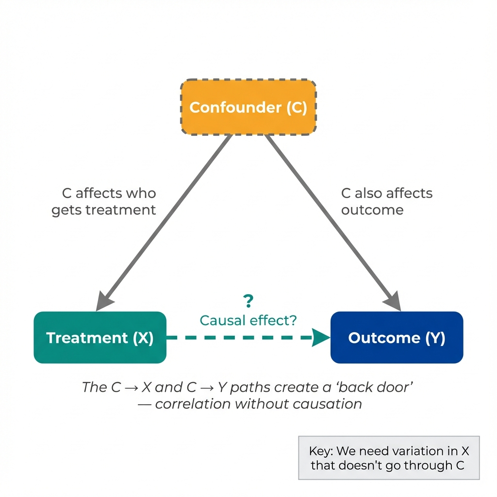
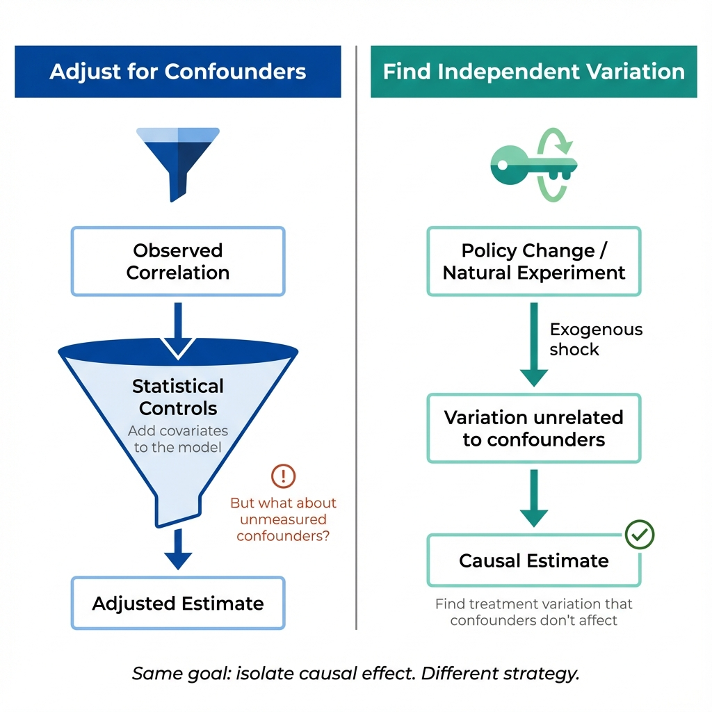

The Correlation
Here's a striking pattern: when ice cream sales go up, so do drowning deaths. (Data are simulated for illustration.)
Ice Cream Sales vs. Drowning Deaths
The Question
Does ice cream cause drowning?
The correlation is undeniable. Every summer, as ice cream sales surge, drowning deaths increase. The pattern is consistent year after year.
If correlation implied causation, we'd have to conclude that ice cream is deadly. Should we ban ice cream to save lives?
Next: Something else is going on here. What's the hidden factor?
The Confounder
A third factor explains both variables. The correlation is real; the causal interpretation is what fails.
☀️ Hot Weather
Hot weather causes both more ice cream consumption and more swimming (leading to more drownings).
Temperature causes both ice cream sales and drowning. The correlation between them is spurious—it exists only because both are driven by the same underlying factor.
What Is a Confounder?
A confounder is a variable that:
- Affects the treatment/exposure (ice cream)
- Affects the outcome (drowning)
- Is not caused by the treatment
When a confounder exists, the observed correlation between treatment and outcome doesn't represent a causal effect. It's a spurious correlation.

Next: How do we deal with confounders? Two different approaches...
Two Approaches
There are two main strategies for tackling confounding in causal inference. Both are valid; each carries distinct strengths and limitations.

Same goal, different strategies for isolating causal effects.
Adjustment-Based Approach
Method: Measure confounders and include them as control variables.
Example: Regress drowning on ice cream sales, controlling for temperature.
Relies on: Identifying and measuring all relevant confounders.
Design-Based Approach
Method: Find variation in treatment unrelated to confounders.
Example: What if an ice cream truck broke down in some neighborhoods? That variation in ice cream access has nothing to do with weather.
Relies on: A credible source of exogenous variation (randomization, policy change, natural experiment).
The Key Difference
Both strategies aim to isolate cause from correlation, but they solve the confounding problem differently.
Adjustment requires knowing what to adjust for. Design-based approaches require finding variation that bypasses confounding altogether.
When credible independent variation exists, it addresses unmeasured confounding in a way that statistical adjustment cannot.
Real-World Example
Do hospitals cause death? People who go to hospitals are more likely to die than people who stay home—yet sicker people are more likely to both seek hospital care AND die.
- Adjustment: Control for severity of illness, comorbidities, age...
- Design-based: Compare patients who live near a hospital to those far away (distance affects hospital use but not underlying health)
Next: What's the key takeaway for causal thinking?
The Key Insight
Correlation reflects all paths between two variables. Causation requires isolating the direct path.
Why Correlation ≠ Causation
Correlation between X and Y can arise from:
- X causes Y (the causal effect we want)
- Y causes X (reverse causation)
- Something else causes both X and Y (confounding)
- Conditioning on a common effect (collider bias)
- Random chance (sampling variation)
A correlation tells you that X and Y move together. It doesn't tell you why.
The Design-Based Insight
Statistical adjustment controls exclusively for confounders you can measure. The most consequential confounders—ability, motivation, health status, expectations—often resist measurement entirely.
This is why causal inference emphasizes identification: finding sources of variation in the treatment that are independent of confounders, measured or not.
Sources of Independent Variation
- Randomization: Randomly assign treatment (clinical trials)
- Policy changes: Laws or programs that affect some people but not others
- Geographic boundaries: Differences at borders or cutoffs
- Timing: Before/after a shock that affected treatment but not confounders
- Natural experiments: Random events that affected treatment assignment
Key Takeaway
Correlation reflects all paths between X and Y. Causation requires isolating the direct path.
Design-based approaches seek variation in X that bypasses confounders—variation independent of the factors affecting Y. Such variation allows causal estimation regardless of whether confounders can be measured.
This is what "identification" means in causal inference.
Looking Ahead
In the next labs, you'll learn about specific threats to causal inference—and the research designs used to overcome them:
- Regression to the mean: Extreme values naturally move toward average
- Maturation: Things change over time regardless of treatment
- History: Other events occur alongside treatment
- Selection: Who gets treated isn't random
Each threat represents a way that confounding can sneak into your analysis. Each has solutions—if you know where to look.